Turrón BNPL
A buy-now-pay-later card for the Spanish market — from brand identity to every screen of the mobile app, launched inside the Plazo app.
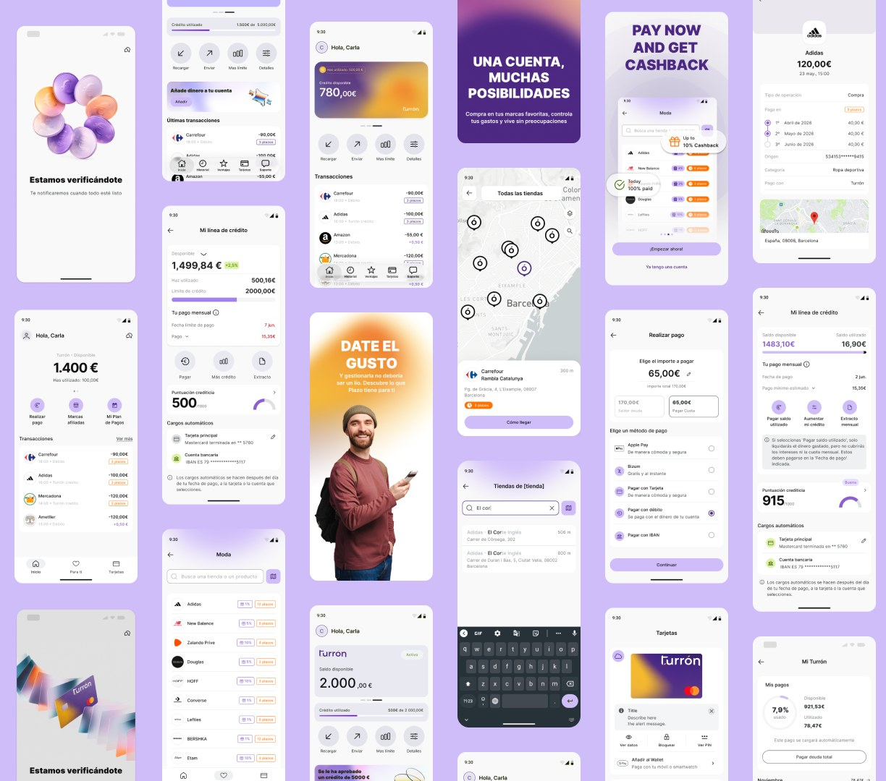
A new credit product: interest-free instalments at partner stores
Plazo is a Spanish fintech app with a credit line and a card. The task was to add a separate buy-now-pay-later product with its own credit line, plus virtual and physical cards. Purchases work only at partner merchants, and the merchant — not the customer — decides the number of instalments: groceries pay next month, fashion in 3–4 payments, jewellery in up to 12.
- Launch the instalment MVP inside the Plazo app — first internally, then for real customers in Catalonia.
- Connect a dedicated credit line to a virtual and a physical Mastercard.
- Make the product clearly different from Plazo's existing credit offer.
- Create a brand that earns the trust of prime, bank-grade customers.
The Challenge
What we had to solve- Two credit products in one app — users must never confuse Plazo with Turrón.
- Customers can't choose the instalment plan, so each merchant's rules have to be clear before they buy.
- Monthly statements, due dates and delinquency are complex mechanics that must feel simple.
- A long onboarding with KYC, credit scoring and a SEPA mandate — without losing people on the way.
Product design from research to launch
Market research
Analysed the Spanish BNPL and fintech landscape: competitors, familiar interaction patterns and best practices of digital banks.
Brand identity
Logo, palette, typography, tone of voice and a full brandbook built around the name.
Product map
Structured the whole ecosystem: web for clients and partners, debit and credit journeys in the app.
Onboarding
Registration, KYC, financial profile, SEPA mandate, card issuing and every approval and rejection branch.
Private area
Home, payment plan, transaction history, partner stores, card, statements and overdue states.
Marketing touchpoints
B2C and B2B landing pages, email templates, social media and out-of-home ads.
What Turrón is made of
Foundations
Web
Mobile app
Turrón Débito
Turrón Crédito
From the first screen to a card in Apple Pay
Around 40 screens across 7 stages, with separate approval and rejection branches. A progress bar, short single-topic steps and clear document-check guidance carry people through a long, regulated journey.
- Welcome
- Login & OTP
- Product choice
- Personal data
- Financial profile & SEPA
- Identity check
- Card & SCA code
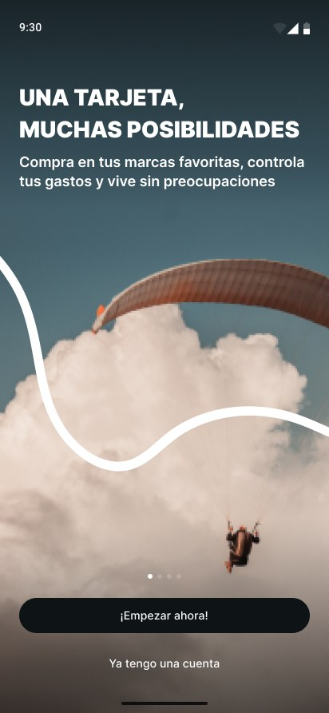
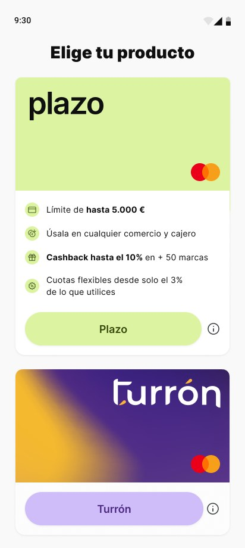
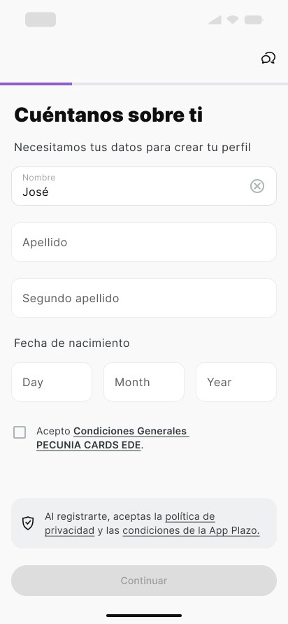
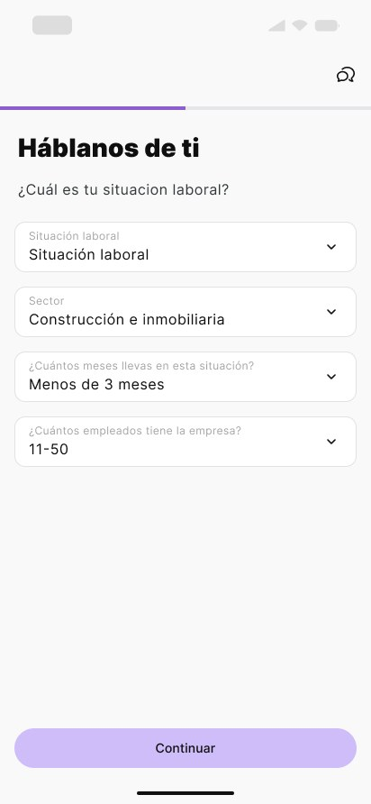
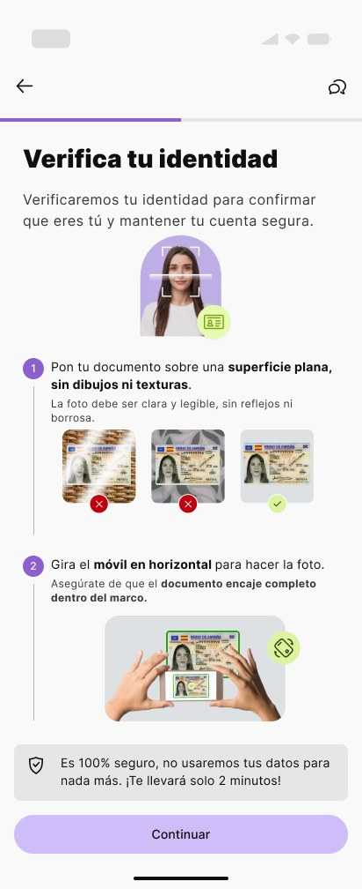
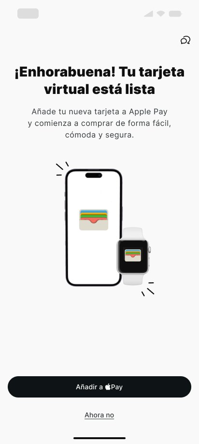
Key journeys
Home & purchases
Available credit is the hero number. Right below it sit three actions: make a payment, find a partner brand and open the payment plan. Each purchase shows that it was split into instalments and where it happened.
- Cashback, purchases, transfers and top-ups in one feed
- “Deferred purchase” label and location on a map
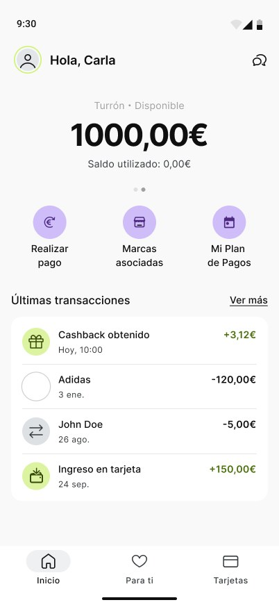
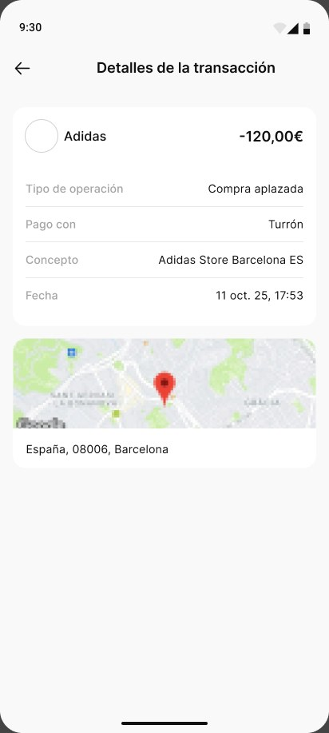
Payment plan & overdue states
The statement mechanics boil down to three lines: amount, end of billing period and payment date. When a payment is missed, the screen changes: the limit is locked and the main button leads straight to paying the debt — no penalties, no scare tactics.
- Automatic charges from a card or bank account (IBAN)
- Separate states: nothing to pay, payment pending, overdue
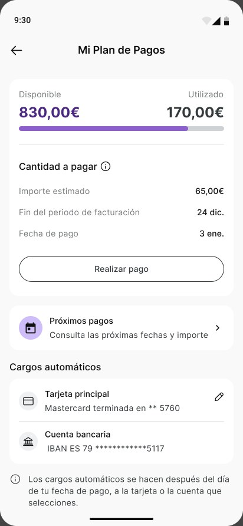
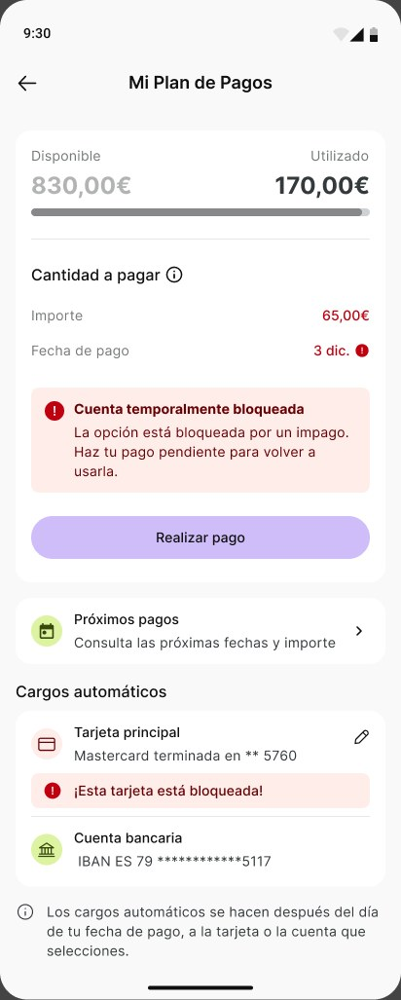
Partner merchants
Turrón only works at partner stores, so finding a merchant is a core journey. Categories, search, a store map and an instalment badge on every brand answer “where can I buy, and in how many payments?” before the checkout.
- Brand page: how instalments work and where to buy — online or in store
- Online purchases open inside the app
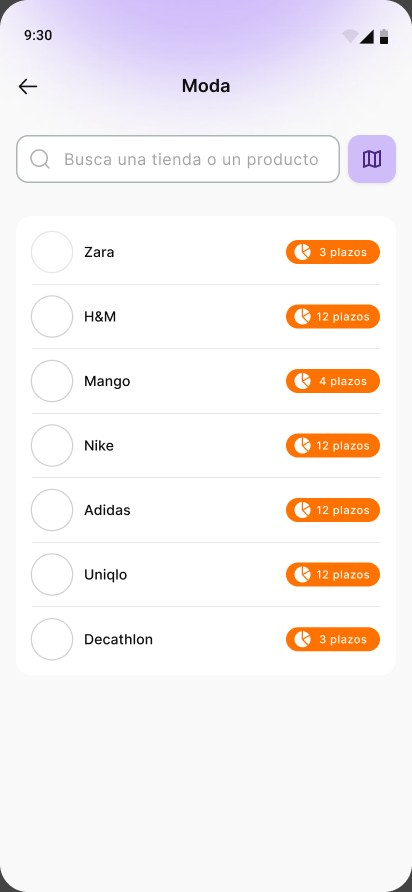
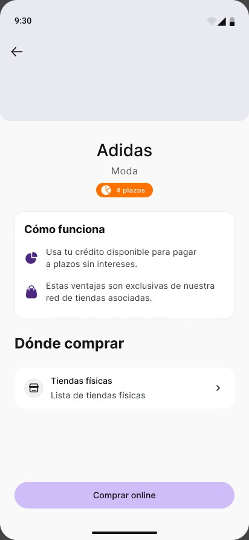
Flexible repayment
People can pay the minimum, settle the whole debt or type any amount in between. The allowed range appears right while typing, and the payment method is picked on the same screen: Apple Pay, Bizum, card or IBAN.
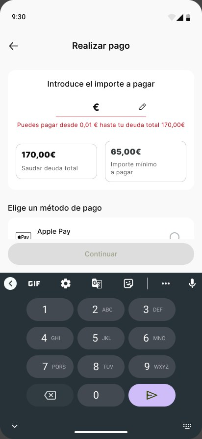
A brand that leaves a sweet aftertaste
La forma más dulce de comprar
Turrón is the Spanish Christmas nougat that's always shared in pieces. The name became the concept: purchases, like turrón, taste better split into parts. Paying in instalments should feel calm, clear and stress-free.
Mission
Bring flexibility to everyday purchases with a simple, transparent way to pay — always interest-free.
Vision
Build a healthier relationship with money, where paying in instalments feels responsible and clear.
Innovative & bold
Not credit “for everything” — instalments designed to reduce the risk of over-borrowing.
Transparent & direct
The offer can look “too good to be true”, so we hide nothing and get straight to the point.
Playful & witty
A name about pleasure and sweetness — communication with personality, not dry transactions.
An ally
On the user's side: we encourage shopping, but always in control.
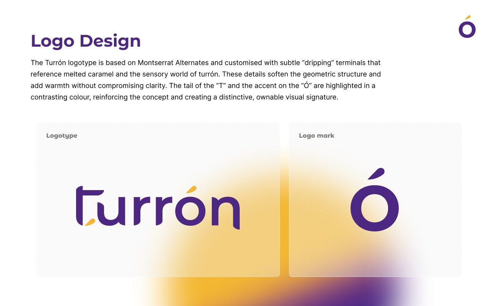
Montserrat Alternates
Headlines and the logotype. The logo is customised with “dripping” terminals like melted caramel; the tail of the “t” and the accent on the “ó” are picked out in gold.
Inter
Body copy and UI — high legibility on screens. Expressive where the brand needs character, neutral where usability matters.
Card, landing page, social and out-of-home
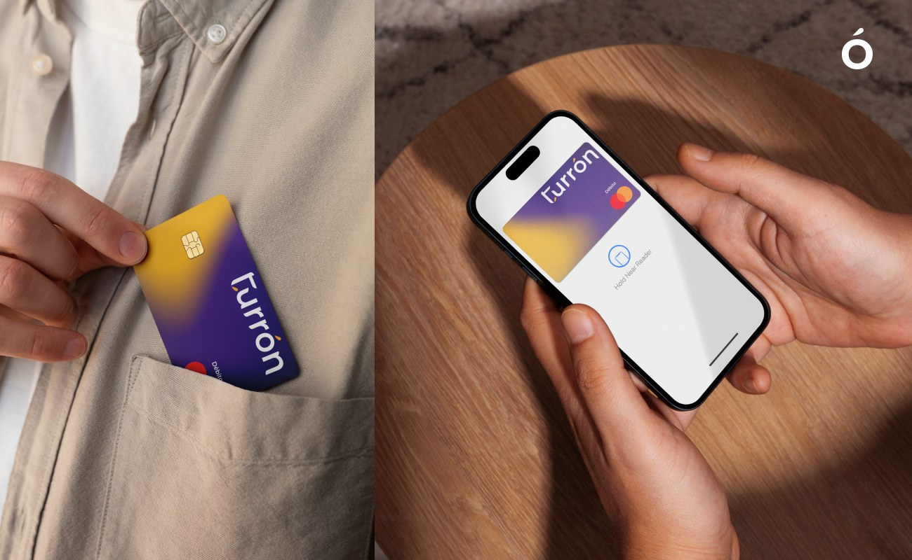
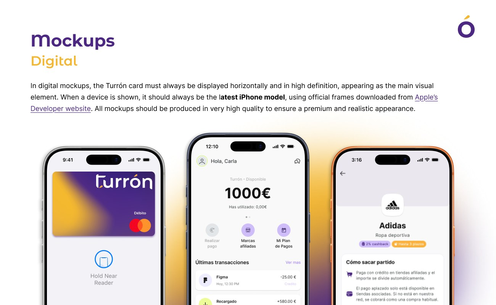
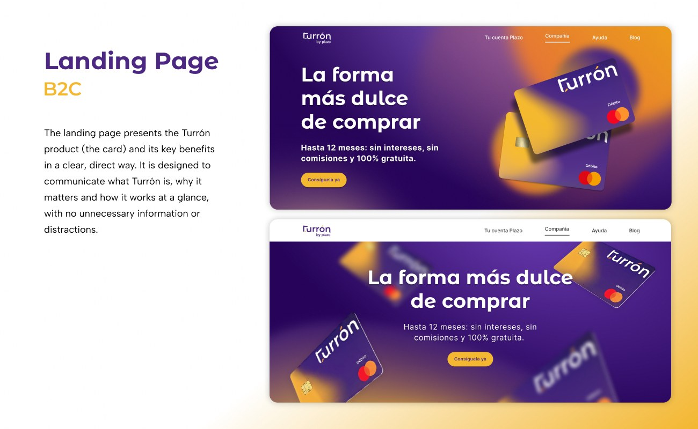
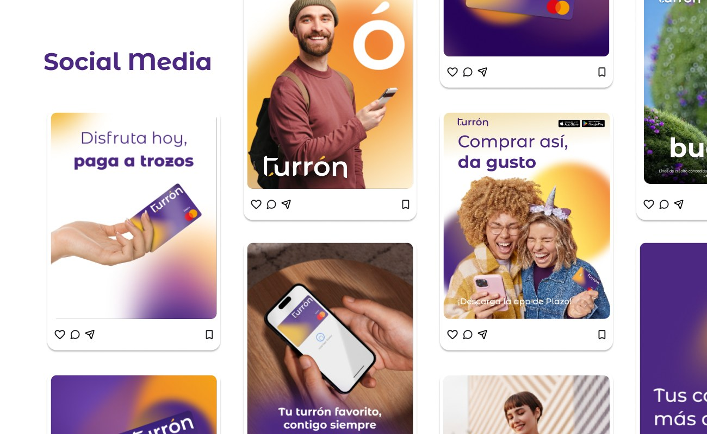
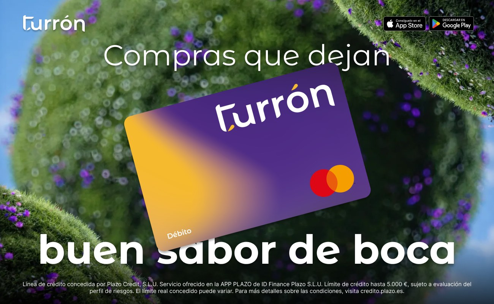
How we measure success
Activation rate
Approved users who activate the BNPL credit line.
BNPL MAU
Users with at least one BNPL purchase a month.
Repeat usage
Users making more than one purchase in a period.
Financed volume
Total purchase volume financed through Turrón.
Utilisation
Share of the available line used by active users.
Default rate
Users missing payments or in delinquency.
Churn
Users who stop after their first purchase.
Funnel drop-off
Application, approval, card linking — where people leave.
Want to learn more about this project or discuss a collaboration?
Get in touchLet's stay in touch!
I'm always open to new projects, long-term collaborations, and exciting ideas. Feel free to reach out through any channel.